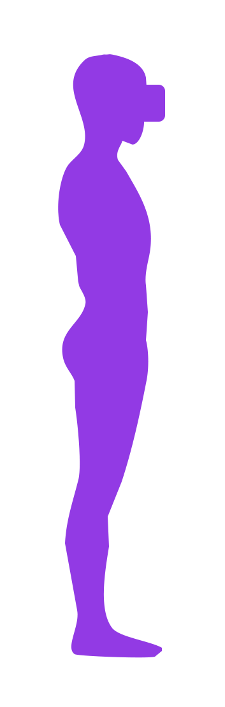

Body Proportions Configuration
SlimeVR uses a virtual skeleton to compute positions from the data it receives from your trackers. As part of the setup procedure, this skeleton is made using your real world measurements (in cm) for various body parts in order for SlimeVR to compute its skeleton accurately to your real body. While these values can be input directly into the SlimeVR server, it is recommended you use the AutoBone system. Once you have completed the auto-configuration process, it is also recommended to use the measurements above to confirm the accuracy before finalising the automatic values. There is also an option to visually check within VR, described at the bottom of this page.
Measurements
|  |
Torso lengthThe torso length is from your shoulders to your pelvis.Chest distanceThe chest distance is from your shoulders to around the midpoint of your torso (around the bottom of your sternum).Waist distanceThe waist distance is from your waist to your hip (pelvis).Hips widthThe hips width value is the distance between your femurs.Legs lengthThe legs length value is the full length of your legs, from your pelvis to your ankle.Knee heightThe knee height value is from the knee to your ankle.Foot lengthThe foot length value is the length of your foot, from your ankle to your toes.Head shiftThe head shift value is from your headset to about the middle of your head.Neck lengthThe neck length value is the distance from about the middle of your head to your shoulders.Hip offset / Foot shiftThese values offset your real trackers from virtual one, if your avatar has non-human or unusual proportions. A good example of this use is in avatars with digitigrade legs that may have the foot further out or back.Skeleton offsetThe Skeleton offset value offsets all your trackers from their physical position forward or backwards. This can be left untouched unless you need it. |
AutoBone (also known as "automatic body proportions calibration") removes the need to manually input bone lengths using automatic bone length calculations recorded through user movements. AutoBone is available as "Automatic calibration" under the "Body Proportions" tab of the GUI.
This bypasses the need to manually set the bone lengths, although it is still possible to fine-tune values manually if needed.
How to Use
Make sure the headset is ON and worn on your head during this process.
Before using AutoBone, you must prepare your body proportion values by standing straight up and pressing the "Reset all proportions" button under the "Body Proportions" tab. If this is not done, then the height value used in calculations will be incorrect.
VERY IMPORTANT: During the recording, you must keep your heels in the same position, otherwise the resulting values will be invalid.
To use AutoBone, follow these steps:
- Navigate to the "Body Proportions" tab and ensure you're on "Automatic calibration" and not "Manual calibration"
- Stand up straight and press the "Reset all proportions" button.
- Follow the steps shown on the GUI.
- If you're using SlimeVR version 0.6.0 or older, these instructions will be more up-to-date and you can safely ignore the instructions on the GUI. To continue using these instructions on SlimeVR version 0.6.0 or older, you can skip to step 3 "Get ready to move" on the GUI.
- Make sure to keep your heels on the ground and in the same position for the duration of recording.
- Press the "Start Recording" button, the GUI will indicate that recording has started. The recording will last for approximately 20 seconds.
- Move until the text on the button changes back to "Start Recording", the current best known movements for calibration are as follows, returning to standing up straight after each step:
- Standing up straight, roll your head in a circle.
- Bend your back forwards and squat. While squatting, look to your left, then to your right.
- Twist your upper body to the left (counter-clockwise), then reach down towards the ground.
- Twist your upper body to the right (clockwise), then reach down towards the ground.
- Roll your hips in a circular motion as if you're using a hula hoop.
- If there is time left on the recording, you can repeat these steps until it's finished.
- When the recording is done, SlimeVR will process the recording. After processing is done, you will be able to see new values for your body proportions reported in cm.
- To use the calculated values, press the "They're correct" button. If the values do not look right, you can try recording again using the "Redo recording" button - the recording will start immediately, so make sure you're ready.
Visual reference for movement calibration steps

If you are having issues with AutoBone:
- Make sure you kept your heels in the same position while recording, don't lift your legs or walk around.
- Make sure your headset isn't lagging, freezing, or teleporting (use the desktop view in SteamVR to start recording).
- Double check that your trackers are mounted correctly and functioning properly.
- Verify that you pressed the "Reset all proportions" button under the "Body Proportions" tab while standing up straight to calibrate your height properly.
- Make sure the height in the "Manual calibration" section under the "Body Proportions" tab is accurate to your own height.
If none of these help, you can ask for help in the #autobone channel in the SlimeVR Discord.
To help with debugging in the SlimeVR Discord, you can send a recording while asking for help. A recording includes a recording of all your tracker information to help recreate your setup, and will include any movements you do, but no personally identifying information. If you are comfortable with sharing your tracker data, you can find your recordings in the server install directory under the "AutoBone Recordings" folder. The most recent recording is auto-saved as "LastABRecording.pfr" and any manually saved recordings will be "ABRecording1.pfr", "ABRecording2.pfr", etc., with the highest number being the most recent.
How it Works
AutoBone works by recording movement data and simulating that movement rapidly while gradually adjusting the bone lengths. When adjusting bone lengths, the algorithm measures the amount the feet slide to know whether it's achieving a better or worse outcome with each adjustment. By iterating over the data multiple times, the algorithm is able to obtain reasonable bone length values with minimal foot sliding.
The AutoBone algorithm uses classic machine learning technique called hyperparameter optimization to acquire the bone length values. First, many samples of movement data are recorded, then using hyperparameter optimization, the algorithm gradually adjusts the bone lengths to minimize the error of foot sliding. Error is calculated through multiple different methods, but generally it is formulated to retain the headset's reported height, "average" human body proportionality, and reduce the amount that the feet slide during movement.
Almost all of the algorithm's internal values are exposed through the config file. Read the following Configuration documentation section to learn more.
Configuration Documentation
All configuration options should be placed in the vrconfig.yml file and are sub-configs to autoBone, for example:
autoBone:
numEpochs: 100
initialAdjustRate: 10.0
adjustRateMultiplier: 0.995
| Config Option | Value Type | Default Value | Description |
|---|---|---|---|
sampleCount | Integer | 1000 | The number of pose samples to record |
sampleRateMs | Long Integer | 20 | The millisecond interval between each sample to record |
saveRecordings | Boolean | false | When true, recordings will automatically be saved |
minDataDistance | Integer | 1 | The minimum distance between samples to be used while adjusting |
maxDataDistance | Integer | 1 | The maximum distance between samples to be used while adjusting |
numEpochs | Integer | 100 | The number of epochs (full loops) to iterate over the data |
printEveryNumEpochs | Integer | 25 | The number of epochs before the progress is logged |
randomizeFrameOrder | Boolean | true | When true, the frame order will be shuffled for each epoch |
scaleEachStep | Boolean | true | When true, the proportions will be scaled to the target height at the end of each epoch |
initialAdjustRate | Float | 10.0 | The factor to adjust the values by each iteration |
adjustRateMultiplier | Float | 0.995 | The factor to decay the adjust rate by each epoch (multiplied by this value) |
slideErrorFactor | Float | 0.0 | The factor of which the foot slide error is used in the error calculation |
offsetSlideErrorFactor | Float | 1.0 | The factor of which the foot offset error is used in the error calculation (captures sliding) |
footHeightOffsetErrorFactor | Float | 0.0 | The factor of which the foot height (y axis) offset error is used in the error calculation |
bodyProportionErrorFactor | Float | 0.2 | The factor of which the body proportion error is used in the error calculation (based on human averages) |
heightErrorFactor | Float | 0.0 | The factor of which the body height error is used in the error calculation |
positionErrorFactor | Float | 0.0 | The factor of which the absolute position error is used in the error calculation |
positionOffsetErrorFactor | Float | 0.0 | The factor of which the absolute position offset error is used in the error calculation |
calcInitError | Boolean | false | When true, the initial error over the data is reported as epoch 0 |
targetHeight | Float | -1.0 | The height to use for the height error calculation, this is calculated automatically when negative but can be overridden with this when set to a positive value in meters |
Configuring Body Proportions Manually
All this configuration can be done from the SteamVR dashboard or within VRChat (in front of a mirror). All measurements are in centimeters. Press + or - to change lengths by 1 cm. Pressing Reset will change the value to a default based on the HMDs current height.
Make sure you have proper mounting before doing this as it will influence your results: mounting page:
You can use a mirror in VRChat to see your trackers' positions. However, compare SteamVR tracker position to IRL joint's position, not your VRChat avatar's joints positions.
Alternatively, you can use the SlimeVR Overlay in SteamVR to visualize your bones.
Make sure to adjust the values from the top-down.
Head shift (8-12)
Shake your head left to right as if you’re disagreeing. Adjust your head offset until any movement is negligible. All trackers should stay in place.
Neck length (8-14)
Move your head up and down as if you’re nodding OR tilt your head to the left and right like a cute, confused, dog. Adjust your neck length until any movement is negligible. All trackers should stay in place.
Torso length (50-70)
Modify the value until your SteamVR waist tracker lines up with your belt line (you can use your controller to line them up).
Chest (25-40) and Waist (2-6) (when using additional spine trackers)
Sit down hunched and modify values until the waist tracker is closest to hip.
Legs (80-100)
Modify until trackers line up vertically with your real feet.
Knees (45-60)
Bend your knees slightly while keeping your back straight and modify the value until your feet move the least amount possible OR sit down and modify until your feet touch the floor (not floating above ground).
Feet (when using feet extensions)
Set “foot length” at 0, change “foot offset” until feet trackers are inside your avatar’s ankles or at the same level horizontally and set “foot length” back to 5.
Hips width (26-32)
Default value is good. Can try to tweak to make your leg trackers line up when resetting, but do not increase in the goal of preventing leg crossing.
Hip offset (0)
Keep at 0 unless you have a particular problem with your avatar.
Skeleton offset (0)
Keep at 0 unless you have a particular problem with your avatar.
Shoulders distance (4-10) and Shoulders width (30-42)
Set Upper arm length to 0 and adjust the values until the elbow trackers are on your shoulders.
Upper/Lower arm distance (20-35)
Adjust so that the SteamVR tracker is on your elbow.
Controller distance z (10-20) and Controller distance y (2-8)
Rotate wrist and adjust until elbow tracker has the least amount of sliding.
Elbow offset (0)
Keep at 0 unless you have arm tracking problems using lower + upper arm tracking from controller.
Created by Butterscotch!#0226, Eiren and CalliePepper#0666, edited and styled by CalliePepper#0666, Erimel#7159, Emojikage#3095, Butterscotch!#0226, and Spazzwan#0001. Video by adigyran#1121 with help of MightyGood#1341.